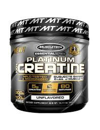

Suplementos deportivos
Los suplementos deportivos son productos diseñados para complementar la dieta y mejorar el rendimiento deportivo, la recuperación muscular, la salud y el bienestar en general. Estos productos están formulados para proporcionar nutrientes específicos que pueden ser difíciles de obtener en cantidades adecuadas a través de la dieta sola, o para optimizar la absorción de ciertos nutrientes.
Proteina en polvo
Este suplemento es una fuente conveniente de proteínas, que son esenciales para la reparación y el crecimiento muscular. La proteína en polvo se deriva de fuentes como suero de leche, caseína, soja, huevo o proteína vegetal. Es útil para personas que tienen dificultades para alcanzar sus necesidades proteicas diarias a través de la dieta sola, especialmente después del ejercicio cuando se requiere una rápida recuperación muscular.
creatina
La creatina es un compuesto natural que se encuentra en el cuerpo y en alimentos como la carne. Se ha demostrado que la suplementación con creatina aumenta los niveles de fosfocreatina en los músculos, lo que puede mejorar la capacidad de generar energía durante el ejercicio de alta intensidad y reducir la fatiga muscular. Es especialmente útil para actividades explosivas como levantamiento de pesas y sprinting.

pre-entrenamientos
Los pre-entrenamientos son suplementos diseñados para aumentar la energía, el enfoque mental y el rendimiento durante el ejercicio. Suelen contener ingredientes como cafeína, beta-alanina, creatina, aminoácidos y otros estimulantes para mejorar el rendimiento y la resistencia.
glutamina
La glutamina es el aminoácido más abundante en el cuerpo y desempeña un papel importante en la síntesis de proteínas, la función inmunológica y la salud intestinal. Se cree que la suplementación con glutamina puede ayudar a reducir el dolor muscular y mejorar la recuperación después del ejercicio intenso.